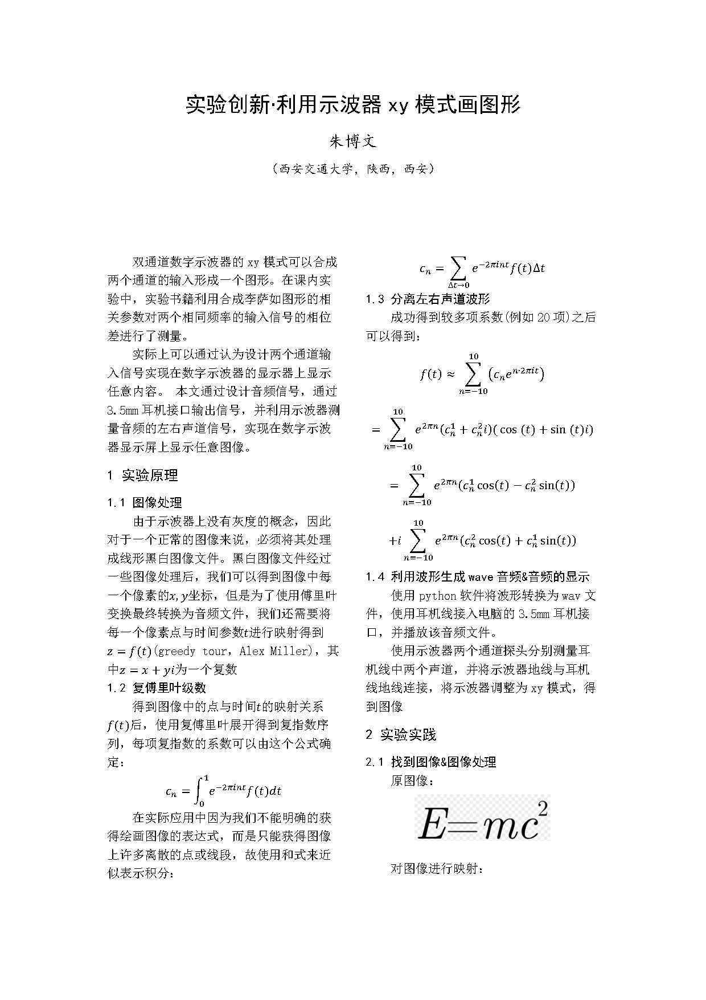
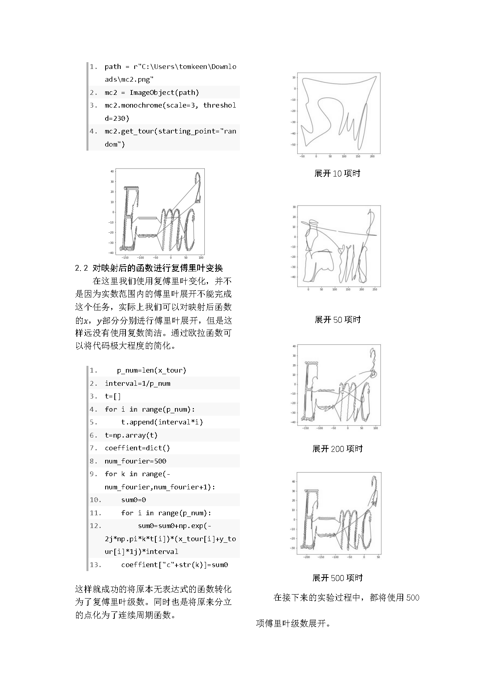
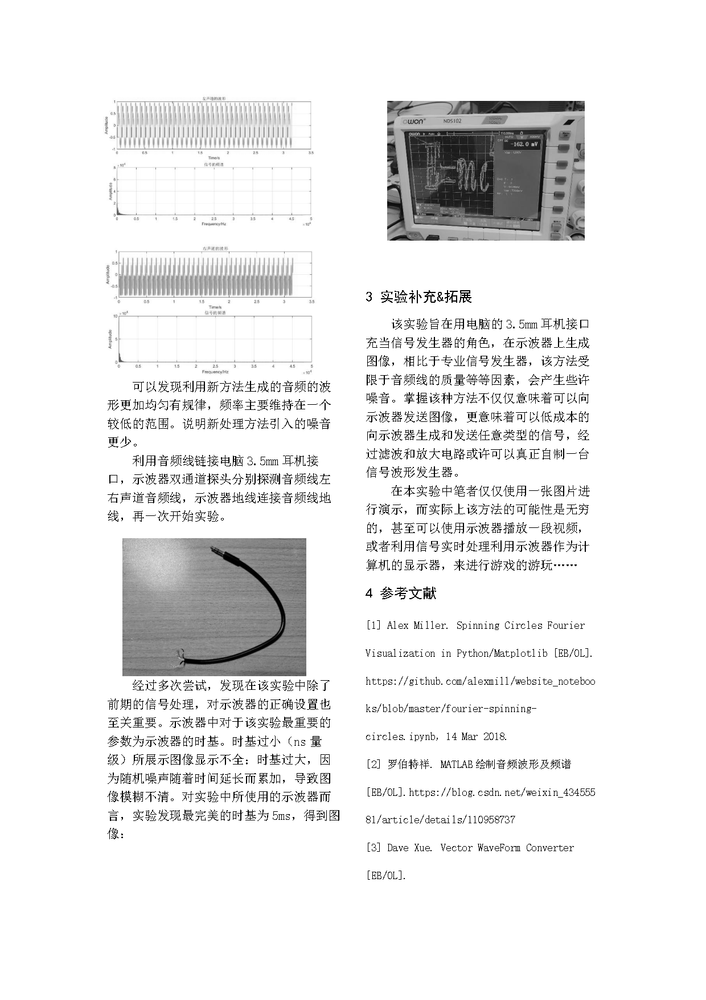
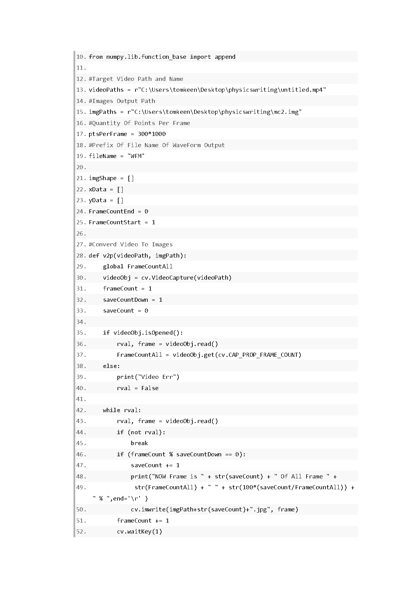
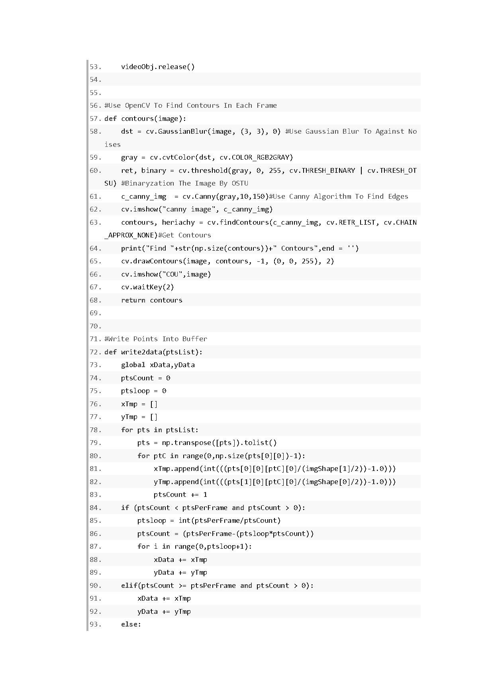
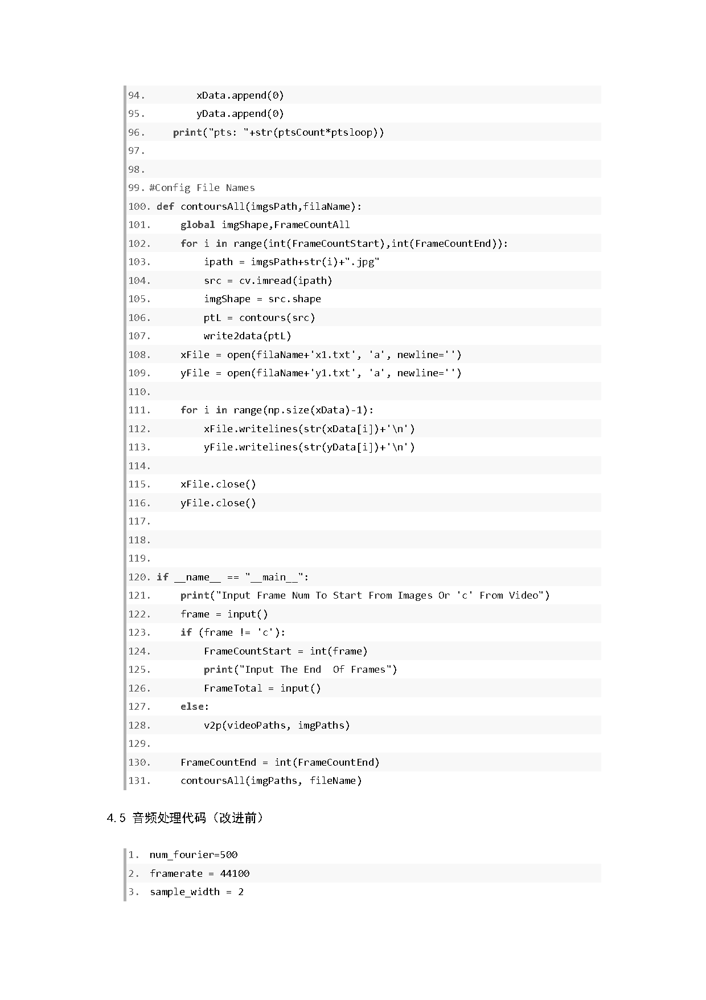

本论文本为物理实验改进的作业。本实验的想法源于自己的一些个人兴趣，是一直想做的事情，很多人已经使用了专业的信号生成器实现了在示波器上绘画图像，但是还没有人使用音频接口（3.5mm耳机接口）来生成图像，这次实验是对耳机（音频）产生原理的一次出色实践。由此产生了利用耳机接口来生成信号的想法。前几日完成了该项实验的基本任务，但是距离发表还有一段距离。自行购买了虚拟示波器，将在电脑上对该项实验进行更加详尽的测试，对示波器和音频使用何种参数可以得到最佳的图像进行探究。事实上要探究这种问题，实际上就是探索hyperparameter的取值，从原理来说完全可以使用梯度下降法对hyperparameter进行探究，我们只需要确定一个对示波器成像质量进行衡量的矩阵。注意本文使用MIT licence。








